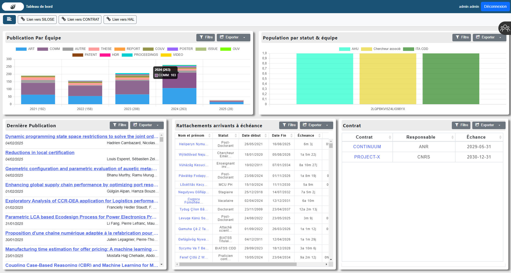

Mes Expériences de Stage
Stage de Première Année
Hardis-Group dans l'équipe Reflex
Entreprise spécialisée dans les services numériques et la gestion de la chaîne d'approvisionnement.
Mission : modernisation d'interface Reflex
Problèmatique :
Une application est déjà existante en ligne de commande, mais elle n'est pas facile à utiliser.
Modernisation Outil d'interfaces Reflex
Le but était de faire une Interface graphique en Python permettant de simplifier l'utilisation du logiciel et ajouter quelques fonctionnalités.
Stage de Deuxième Année :
Laboratoire G-SCOP
Centre de recherche pluridisciplinaire spécialisé dans la conception et l'optimisation des systèmes de production
Problèmatique :
Plusieurs applications sont utilisées au laboratoire pour diverses utilisations.
Afin d'aider
les chefs d'équipe au quotidien, il faut centraliser les données importantes dans un tableau de
bord.

Dashboard - Chef d'équipe
Réalisation d'une page web regroupant plusieurs informations utiles aux chefs d'équipe,
Présentant des graphiques sur les dernières publications de l'équipe et des détails sur ses
membres.
![error]()